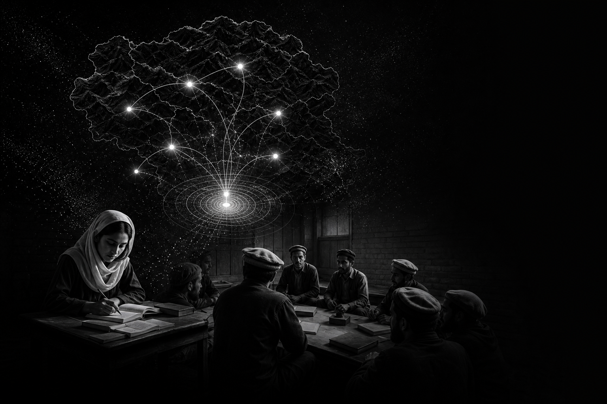
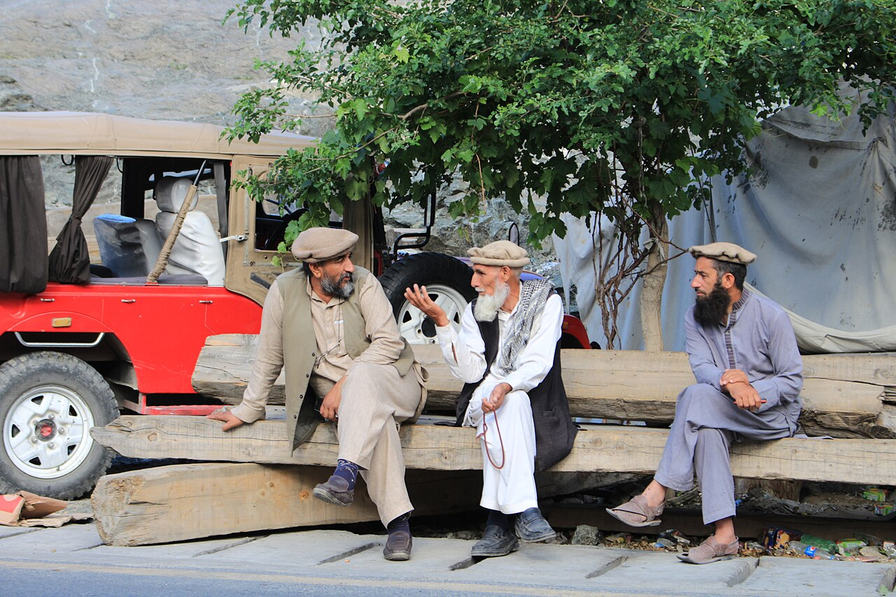
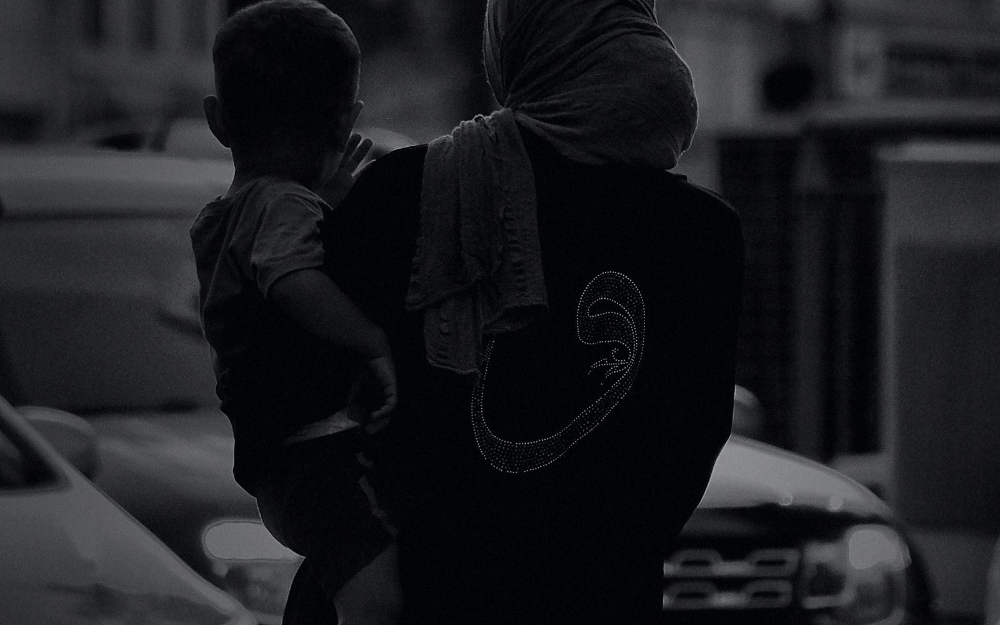

Participants leave with clearer digital safety habits and stronger verification instincts
Responsible digital practice
Pioneering responsible digital experiences
mehfooz brings culturally tailored digital literacy, misinformation resilience, and ethical public-source intelligence workflows to communities and organizations that need clarity online.
Scroll
GHIZERLocal Education HubHUNZACommunity ClassroomGILGITSignal CoordinationSKARDUYouth Collective HQASTOREField Reporter HubKHAPLUCultural Archive
Featured in and supported by

 Community-first digital safety
Community-first digital safety
Community-first digital safety
Featured focus
Community learningDigital safetyMisinformation responsePublic-source analysisThreat intelligenceReporting

Learning pathways make checking claims feel natural before sharing
Programs translate technical risk into simple, calm, community-ready action
Public signals are organized into readable context for safer decisions

Community-first safety
Premium learning, practical protection, locally grounded intelligence.
mehfooz combines digital safety training, public-source analysis, and clear reporting so partners and communities can make better decisions online with confidence.
Read the mission
Our programs
Built with a focus on learning, engagement, and innovation
Each pathway is designed for real community learning, responsible online behavior, and partner-ready reporting.
Community Engagement Program
Empowering local leaders and fostering grassroots initiatives to promote digital literacy and combat misinformation...
- Local workshops
- Trusted messenger playbooks
- Community reporting pathways
Ulema Training
The Ulema Training program equips religious leaders in Gilgit Baltistan with digital literacy skills, enabling them...
- Digital foundations
- Online safety and ethics
- Community outreach
Campus Programs
Cultivating young digital leaders through digital literacy clubs, student-led projects, teacher support, and campus...
- Student ambassador kits
- Teacher training
- Digital literacy clubs
Virtual Community Events
Online gatherings to inspire and educate, with expert talks, workshops, panels, live discussions, and low-bandwidth...
- Live workshops
- Recorded sessions
- Offline follow-up resources
DigiSaheli
Creating a supportive environment for learning and growth for women in accessing technology, digital confidence,...
- Privacy clinics
- Mentor circles
- Responsible reporting support
Mini-Courses
Concise, focused learning modules on digital literacy topics, tailored for residents of Gilgit Baltistan and built...
- Digital basics
- Online safety
- Fact-checking techniques
OSINT analysis
From public signals to responsible decisions
mehfooz uses defensive public-source analysis to help teams understand misinformation, impersonation, digital exposure, and community risk.
- Use public, lawful, proportionate sources only.
- Minimize personal data and avoid doxxing or harassment.
- Separate verified facts from analyst assessments.
- Document confidence, uncertainty, and source limitations.
- Focus on protection, education, and responsible response.
signal model
signals become decisions
Public-source signals are triaged, corroborated, scored, and translated into calm, actionable briefs.
Threat category distribution
A quick view of common issue types in a monitoring queue.
Source reliability breakdown
Shows why claims need context before they become recommendations.
Investigation workflow
A careful path from question to report
Every step is built around public sources, clear documentation, and defensive outcomes.
-
01
Frame the question
Clarify the decision the investigation needs to support, the communities affected, and the boundaries...
-
02
Collect public signals
Gather public posts, domains, official notices, web pages, and media references using a documented...
-
03
Enrich and score
Compare signals against corroborating sources, rate reliability, and flag sensitive information for...
-
04
Analyze patterns
Build timelines, category breakdowns, and relationship maps that help teams understand risk without...
-
05
Report responsibly
Deliver clear findings, confidence levels, recommended actions, and limitations so stakeholders can...
FAQ
Insights and clarifications
Straight answers for partners, communities, and teams evaluating mehfooz.
We work closely with the community offering specialized courses, fact-checking tools, and AI-assisted learning through mehfoozbot to help users identify, verify, and report false information circulating online.
We focus on localized, community-driven solutions that address the unique needs and challenges faced by residents of Gilgit Baltistan. Our content is tailored to the cultural, linguistic, and socioeconomic context of the region.
Absolutely. We have developed offline-accessible content and community-based learning hubs to reach even the most remote and underserved areas of the region.
You can participate in our community engagement programs, become a student ambassador, or volunteer for our digital literacy initiatives. Use the contact form for more information on how to get involved.
User stories
How people feel safer online
I am really excited to see how switching mehfooz's interface to Urdu and other local languages will revolutionize...
I've always been curious about the internet, but I am also scared of the risks. mehfooz really sounds promising and...
Can't wait to share mehfooz's resources with my network so that more people in my area can benefit from digital...
Blog
Explore digital resilience insights
Professional notes on ethical OSINT, digital footprint mapping, risk scoring, and community safety.
Youth for a Peaceful Society
According to UNFPA, there are more than 1.8 billion young people in the world today, 90% of whom live in developing...
Read articleUnequal Maternal Care: Balochistan and Gilgit Baltistan's Plight
Maternal mortality remains a global concern, with 287,000 maternal deaths globally in 2020.
Read articlePakistan’s rise in digital propaganda: what’s next?
Pakistan has seen a massive emergence of fake news in recent years with the increasing use of social media, access to...
Read article
Ready to build resilience?
Start a conversation